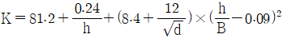
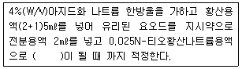

수질환경산업기사 (2007-03-04 기출문제)
1과목: 수질오염개론
1. 수중의 CO2농도나 암모니아성 질소가 증가하며 Fungi가 사라지는 하천의 변화과정 지대는? (단, Whipple의 4지대 기준)
- 분해지대
- 회복지대
- 활발한 분해지대
- 활발한 회복지대
(정답률: 알수없음)

2. 수분함량 97%의 슬러지 14.7m3를 수분함량 70%로 농축하면 용적은?
- 0.47m3
- 1.47m3
- 2.47m3
- 4.47m3
(정답률: 알수없음)
3. 20℃에서 K1 이 0.16/day이라 하면 실제 온도가 10℃일 때 탈산소계수는? (단, 온도보정계수θ는 1.047이다)
- 0.08/day
- 0.10/day
- 0.12/day
- 0.14/day
(정답률: 알수없음)
4. 지하수의 특성을 설명한 것 중 옳지 않은 것은?
- 국지적인 환경조건의 영향을 크게 받는다.
- 수온의 변동이 적다
- 탁도가 높다
- 자정작용이 느리다.
(정답률: 알수없음)
5. pH 2.8인 용액중의[H+]은 몇 mg/ℓ인가?
- 7.95
- 5.53
- 3.59
- 1.58
(정답률: 알수없음)
6. 이상적 plug flow에 관한 내용으로 알맞지 않은 것은?
- 분산(Variance)은 0이다.
- 분산수(dispersion No.)는 0이다.
- 모릴지수(M)값이 1에 가까울수록 이상적인 흐름이다.
- 충격부하, 부하변동에 강하다.
(정답률: 알수없음)
7. 강물의 유량조사를 위하여 500mg/L의 추적자(tracer)를 500L/min의 유량으로 주입시켰다. 그 결과 측정지점에서의 추적자 농도는 200mg/L인 것으로 조사되었다. 원래 강물의 추적자 농도가 50mg/L 였다면 이들 자료에서 강물의 유량은?
- 16.7 L/sec
- 19.7 L/sec
- 23.7 L/sec
- 28.7 L/sec
(정답률: 알수없음)
8. 수소이온 농도가 2.0 × 10-5mol/L이면 pH는?
- 4.1
- 4.3
- 4.7
- 4.9
(정답률: 알수없음)
9. 0.3N의 BaCl2ㆍ2H2O(분자량 = 244.4g) 용액 250㎖를 만드는데 필요한 BaCl2ㆍ2H2O의 양(g)은?
- 6.6g
- 9.2g
- 10.3g
- 16.6g
(정답률: 알수없음)
10. 초기농도가 300mg/L인 오염물질이 있다. 이물질의 반감기가 10day 라고 할 때 반응속도가 1차 반응에 따른다면 1일 후의 농도는?
- 250mg/L
- 260mg/L
- 270mg/L
- 280mg/L
(정답률: 알수없음)
11. Glucose(C6H12O6) 200mg/L 용액을 호기성 처리시 필요한 이론적 인(P) 량(mg/L)은? (단, BOD5: N: P = 100: 5: 1 , K1 = 0.1 day-1, 상용대수기준)
- 약 1.5
- 약 2.5
- 약 3.5
- 약 4.5
(정답률: 알수없음)
12. THM(Tri Halo Methane)의 생성에 관한 것 중 옳지 않은 것은?
- 유리염소와 부식질계 유기물이 반응하여 생성된다
- 수온이 증가할수록 생성량이 증가한다.
- pH가 낮을수록 산촉매작용으로 생성량이 증가한다.
- THM는 대부분 클로로포름으로 존재한다.
(정답률: 알수없음)
13. 해수의 특징에 관한 설명 중 틀린 것은?
- 해수의 [마그네슘/ 칼슘]비는 3-4 정도로 담수에 비하여 높다.
- 염분은 극해역에서는 높고 적도해역에서는 다소 낮다.
- 해수의 주요성분 농도비는 일정하다.
- 해수의 pH는 8.2 정도이며 밀도는 수심이 깊을수록 증가한다.
(정답률: 알수없음)
14. 1000m3인 탱크에 염소이온 농도가 100mg/L이다. 탱크 내에 물은 완전혼합이고, 계속적으로 염소이온이 없는 물이 480m3/day로 유입된다면 탱크내 염소이온농도가 10mg/L로 낮아질 때까지의 소요시간(hr)은?
- 116
- 154
- 186
- 196
(정답률: 알수없음)
15. Mg(OH)2 232 mg/L 용액의 pOH는? (단, g(OH)2는 완전해리 하며 M.W = 58)
- 2.1
- 2.4
- 11.6
- 11.9
(정답률: 알수없음)
16. 친수성 콜로이드에 관한 설명으로 알맞지 않은 것은?
- 틴들( Tyndall)효과가 대단히 작거나 없다.
- 유탁상태(에멀젼)로 존재한다.
- 다량의 염을 첨가하여야 응결 침전한다.
- 표면장력이 용매보다 강하다.
(정답률: 알수없음)
17. Formaldehyde(CH2O)의 COD/TOC의 비는?
- 2.67
- 2.88
- 3.37
- 3.65
(정답률: 알수없음)
18. 해수의 화학적 특성 중에서 영양염류의 농도는 매우 중요하다. 다음 중 영양염류가 찬 바다에 많고 따뜻한 바다에 적은 이유로 틀린 것은?
- 찬바다의 표층수는 원래 영양염류가 풍부한 극지방의 심층수로부터 기원하기 때문에
- 따뜻한 바다의 표층수는 적도부근의 표층수로부터 기원하기 때문에
- 찬 바다에는 겨울철 성층현상의 심화로 수계가 안정되어 영양염류의 손실이 적기 때문에
- 따뜻한 바다에서 표층수의 영양염류는 공급없이 식물성 플랑크톤에 의한 소비만 주로 일어나기 때문에
(정답률: 알수없음)
19. 물의 물리적 성질을 나타낸 것 중 틀린 것은?
- 비열 1.0cal /gㆍ℃(15℃)
- 표면장력 72.75dyne/cm (20℃)
- 비저항 2.5×107Ωㆍcm
- 기화열 539.032kcal/g (100℃)
(정답률: 알수없음)
20. Kolkwitz 와 Marson의 4지대에서 초록색으로 나타내는 수역은?
- 강부수성수역
- α-중부수성수역
- β- 중부수성수역
- 빈부수성수역
(정답률: 알수없음)
2과목: 수질오염방지기술
21. 유량이 400,000m3/day이고 BOD가 1.2mg/ℓ인 하천에 인구 15만명의 도시에서 50,000m3/day의 하수가 배출되고 1인당 1일 BOD 배출 원단위를 50g 이라고 가정할 때 하수처리장을 건설하여 BOD 제거율을 얼마로 해야 처리된 하수가 하천으로 유입된 후 (완전혼합으로 가정) BOD를 2.0ppm으로 유지할 수 있는가?
- 88.5%
- 92.5%
- 94.4%
- 96.5%
(정답률: 알수없음)
22. BOD가 940mg/L, SS가 15 mg/L,질소분 5mg/L, 인(P)분 55mg/L인 폐수를 활성 슬러지법으로 원활히 처리하기 위해 공급해야 하는 요소의 량(mg/L)은? (단, 요소 : CO(NH2)2 , BOD: N: P = 100: 5: 1)
- 60
- 70
- 80
- 90
(정답률: 알수없음)
23. 고형물의 농도가 15%인 슬러지 100kg을 건조상에서 건조시킨 후 수분이 7%로 나타났다. 감소된 물의 양은? (단, 슬러지 비중 1.0)
- 약 72kg
- 약 76kg
- 약 80kg
- 약 84kg
(정답률: 알수없음)
24. 생물막법인 접촉산화법의 장점으로 틀린 것은?
- 분해속도가 낮은 기질제거에 효과적이다.
- 부하, 수량변동에 대하여 완충능력이 있다.
- 슬러지 반송이 필요 없고 슬러지 발생량이 적다
- 고부하에 따른 폐쇄위험이 적다.
(정답률: 알수없음)
25. BOD 1000mg/ℓ, 폐수량 1000m3/일의 공장폐수를 BOD용적부하 0.4kg/m3ㆍ일의 활성슬러지법으로 처리하는 경우 포기조의 수심을 4m로 하면 포기조의 표면적은?
- 약 425m2
- 약 525m2
- 약 625m2
- 약 725m2
(정답률: 알수없음)
26. MLSS농도가 4000mg/ℓ이고 30분 침강후의 슬러지 용적이 25%(SV30)인 경우 활성슬러지의 SVI는?
- 약 63
- 약 73
- 약 83
- 약 93
(정답률: 알수없음)
27. 유입폐수의 유량이 2,000m3/day, 포기조 내의 MLSS농도가 4,500mg/ℓ 이며 포기시간은 12시간, 최종침전지에서 매일 50m3의 잉여슬러지를 인발한다. 이 때 잉여슬러지의 농도는 50,000mg/ℓ이며 방류수의 SS는 무시한다면 슬러지체류시간(SRT)는?
- 1.4day
- 1.8day
- 2.2day
- 2.6day
(정답률: 알수없음)
28. 유해물질인 시안처리방법과 가장 거리가 먼 것은?
- 알칼리염소법
- 전해법
- 감청법
- 아말감법
(정답률: 알수없음)
29. 부피가 1000m3인 탱크에서 G(평균속도경사)값을 30/s 로 유지하기 위해 필요한 이론적 소요동력(W)은? (단, 물의 점성계수는 1.139× 10-3 Nㆍ s/m2)
- 1025W
- 1250W
- 1425W
- 1650W
(정답률: 알수없음)
30. 1차, 2차, 3차 순으로 처리하는 어느 폐수처리장이 있다. 이 처리장의 1차 처리효율이 30%, 2차 처리효율이 80%, 3차 처리효율이 50% 이었다면 전체 처리효율은?
- 88%
- 90%
- 93%
- 98%
(정답률: 알수없음)
31. 폐수의 고도처리에 관한 기술 중 잘못된 것은?
- Phostrip프로세스는 폐수 중 인성분을 생물학적, 화학적 원리를 함께 이용하여 제거하는 방법이다.
- 고도처리법은 재래식 2차처리에서 완전히 제거되기 어려운 성분을 다시 제거하는 방법이다.
- 모래여과법은 고도처리에서 흡착법이나 투석법의 전처리로서 중요하다.
- 폐수중의 질소화합물은 철염에 의한 응집침전으로 대부분 제거된다.
(정답률: 알수없음)
32. 하수처리시 소독 방법인 자외선 소독의 장점으로 틀린 것은? (단, 염소 소독과의 비교)
- 안전성이 높다
- 소독의 성공여부를 즉시 측정할 수 있다.
- 잔류독성이 없다.
- 대부분의 virus, spores, cysts 등을 비활성 시키는데 염소보다 효과적이다.
(정답률: 알수없음)
33. 폭기조 내의 MLSS가 4000mg/L 폭기조 용적이 500m3인 활성슬러지법에서 매일 50m3의 폐슬러지를 뽑아 소화조로 보내 처리한다면 세포의 평균체류시간은? (단, 반송슬러지 농도는 2%, 비중은 1.0 , 유출수내 SS 농도 고려안함)
- 2일
- 3일
- 4일
- 5일
(정답률: 알수없음)
34. 유량 0.2m3/sec가 평균길이가 100m, 평균 폭이 80m, 평균수심이 4m인 저수지에 연속적으로 유입되고 있다. 저수지의 수위가 일정하게 유지된다면 이 저수지의 평균 수리학적 체류시간은?
- 1.85day
- 2.35day
- 3.65day
- 4.35day
(정답률: 알수없음)
35. 어떤 공장에서 0.1%의 NaOH를 함유한 알칼리성 폐수를 배출하고 있다. 이 폐수를 완전 중화하는데 폐수 100m3당 37% HCl(비중 1.18)의 필요한 량은? (단, 폐수의 비중은 1.0이라 한다. Cl 원자량 : 35.5 , Na 원자량 : 23)
- 약 120L
- 약 150L
- 약 180L
- 약 210L
(정답률: 알수없음)
36. 슬러지 건조고형물 무게의 2/3가 유기물질, 1/3이 무기물질이며 이 슬러지 함수율은 80% , 유기물질 비중은 1.0 ,무기물질 비중은 2.5라면 슬러지 전체의 비중은?
- 1.02
- 1.04
- 1.08
- 1.12
(정답률: 알수없음)
37. 흡착 실험식인 Langmuir식이 유도되기 위한 가정으로 알맞지 않는 것은?
- 한정된 표면만이 흡착에 이용됨.
- 표면에 흡착된 용질물질은 그 두께가 분자 한두개의 두께
- 흡착은 가역적이고 평형조건이 이루어 졌음
- 표면 흡착 지점의 개수는 용질농도에 비례함.
(정답률: 알수없음)
38. 생물학적 처리공정에서 질산화 반응은 다음의 총괄반응식으로 나타낸다. NH4+ + 2O2 → NO3- + 2H+ + H2O NH4+ 1g이 산화되는데 요구되는 산소(O2)의 양을 화학 양론적으로 계산하면 얼마인가?
- 2.48g
- 3.56g
- 4.42g
- 5.26g
(정답률: 알수없음)
39. 5000m3/d 의 유량인 하수에 인이 10mg/L들어있다. 인 1kg 침전시키는데 액체명반 0.87kg이 필요하다면 하수에서 인을 완전히 제거 침전시키는데 필요한 액체명반의 양은? (단, 액체명반: Al2(SO4)3ㆍ18H2O, 분자량: 667, 단위중량 : 1200kg/m3)
- 30.3ℓ/day
- 32.3ℓ/day
- 34.3ℓ/day
- 36.3ℓ/day
(정답률: 알수없음)
40. 하수 고도처리공법 중 혐기무산소호기조합법에 관한 설명으로 틀린 것은?
- 표준 도시하수의 경우 일차침전지 유출수에 대하여 총질소 제거율은 60 ~70% 정도가 기대된다.
- 표준 도시하수의 경우 일차 침전지 유출수에 대하여 총인 제거율은 70 - 80%정도가 기대된다.
- 인제거율 또는 인제거량은 잉여슬러지량과 잉여슬러지의 인함량에 의해 결정된다.
- 인제거율은 수온에 따라 크게 영향을 받으며 우수가 유입되는 경우는 질소제거성능이 저하된다.
(정답률: 알수없음)
3과목: 수질오염공정시험방법
41. 흡광광도법에 관한 설명 중 옳지 않은 것은?
- 측정 파장범위는 200 ~ 900nm이다.
- 파장의 선택에는 일반적으로 단색화장치 또는 거름종이를 사용한다.
- 자외부의 광원으로 주로 중수소 방전관을 사용한다.
- 투과도의 상용대수를 흡광도라 한다.
(정답률: 알수없음)
42. 수질오염공정시험방법의 총칙에 관한 다음 설명 중 잘못된 것은?
- 방울수라 함은 0℃에서 정제수 20방울을 적하 할 때, 그 부피가 약 1㎖ 되는 것을 말한다.
- “수욕상 또는 물중탕 중에서 가열한다”라 함은 따로 규정이 없는 한 수온 100℃에서 가열함을 뜻한다.
- 온도의 표시는 셀시우스법에 따라 아라비아 숫자의 오른쪽에 ℃를 붙인다.
- “정확히 취하여”라 하는 것은 규정한 양의 시료 또는 시액을 홀피펫으로 눈금까지 취하는 것을 말한다.
(정답률: 알수없음)
43. 웨어(weir)의 수두가 0.2m, 수로의 폭이 0.5m, 수로의 밑면에서 절단 하부점까지의 높이가 0.8m인 직각 삼각웨어의 유량은? (단, 유량계수

)- 약 0.8m3/min
- 약 1.5m3/min
- 약 2.3m3/min
- 약 2.7m3/min
(정답률: 알수없음)
44. 전기전도도에 관한 설명 중 알맞지 않은 것은?
- 용액이 전류를 운반 할 수 있는 정도를 말한다.
- 전기전도도는 온도차에 의한 영향이 크므로 측정 결과 값의 통일을 기하기 위해 25℃에서의 값으로 환산하여 기록한다.
- 국제단위계인 mS/m(millisiemens/meter) 또는 S/cm ( microsiemens/centimeter)단위로 측정결과를 표시하고 있다.
- mS/m = 100S/cm(또는 100mhos/cm)이다.
(정답률: 알수없음)
45. 식물성 플랑크톤(조류)분석에 관한 설명으로 알맞지 않은 것은?
- 플랑크톤의 종류를 파악하는 것은 정성분석이다.
- 즉시 분석하는 것이 어려울 경우 메틸알코올(5%)을 가하여 보전한다.
- 식물성 플랑크톤은 운동력이 없거나 극히 적다.
- 정성시험시 검경배율 100 ~ 1000배 시야에서 세포의 형태와 내부구조 등의 미세한 사항을 관찰한다.
(정답률: 알수없음)
46. 수질오염공정 시험방법의 총칙 설명에서 옳지 않은 것은?
- 온도의 영향이 있는 실험결과 판정은 표준 온도를 기준으로 한다.
- 밀봉 용기라 함은 취급 또는 저장하는 동안에 기체 또는 미생물이 침입하지 아니하도록 내용물을 보호하는 용기를 말한다.
- 제반시험 조작은 따로 규정이 없는 한 실온에서 실시한다.
- 기체의 농도는 표준상태(0℃,1기압, 비교습도 0%)로 환산 표시한다.
(정답률: 알수없음)
47. 디페닐카르바지드를 작용시켜 생성되는 적자색의 착화합물의 흡광도를 540nm에서 측정하여 정량하는 항목은?
- 카드뮴
- 6가크롬
- 비소
- 니켈
(정답률: 알수없음)
48. 분원성 대장균군 시험에 관한 설명으로 틀린 것은?
- 분원성 대장균군수/100mL의 단위로 표시한다.
- 분원성 대장균군 시험은 추정시험, 완전시험, 확정시험으로 한다.
- 시료를 유당이 포함된 배지에 배양할 때 분원성 대장균군이 증식하면서 가스를 생성하는데 이 때의 양성시험관수를 확률적인 수치인 최적확수로 표시하는 방법이다.
- 분원성 대장균군이라 함은 온혈동물의 배설물에서 발견되는 그람음성, 무아포성의 간균으로서 44.5℃에서 유당을 분해하며 가스 또는 산을 발생하는 모든 호기성 또는 통성 혐기성균을 말한다.
(정답률: 알수없음)
49. 수로의 형상, 구배등이 일정하지 않는 개수로에서 부표를 사용하여 유속을 측정한 결과 수로의 평균 단면적이 1.6m2, 표면최대유속은 2.4m/sec 이다. 이 수로에 흐르는 유량 (m3/min)은?
- 약 124
- 약 136
- 약 159
- 약 173
(정답률: 알수없음)
50. 채취된 시료수에 다량의 점토질 또는 규산염을 함유한 경우, 시료의 적용되는 전처리 방법은?
- 질산 - 황산에 의한 분해
- 질산 - 과염소산 - 불화수소산에 의한 분해
- 질산 - 황산 - 과염소산에 의한 분해
- 회화에 의한 분해
(정답률: 알수없음)
51. 수질오염공정시험법에 의해 분석할 시료채취량은 시험항목 및 시험횟수에 따라 차이가 있으나 보통 몇 ℓ 정도를 채취하는가?
- 0.5 - 1ℓ
- 1.5 - 2ℓ
- 2 - 3ℓ
- 3 - 5ℓ
(정답률: 알수없음)
52. 알칼리성 100℃에서 과망간산칼륨에 의한 화학적 산소요구량측정방법의 일부분이다. 괄호안에 알맞은 색깔은?

- 무색
- 청남색
- 엷은 홍색
- 청록색
(정답률: 알수없음)
53. 아질산성 질소와 질산성 질소 측정에 적용되는 방법은?
- 이온크로마토그래피법
- 가스크로마토그래피법
- 이온 전극법
- 원자흡광광도법
(정답률: 알수없음)
54. BOD를 측정할 경우 시료의 전처리에 대한 설명이다. 틀린 것은?
- 시료의 pH가 6.5 ~ 8.5 범위를 벗어나는 시료는 염산(1+5) 또는 2% 수산화나트륨 용액으로 시료를 중화한다.
- 시료 중화시 넣어주는 산 또는 알칼리의 양은 시료량의 0.5%가 넘지 않도록 한다.
- 시료는 시험하기 바로 전에 온도를 20±1℃로 조정한다.
- 일반적으로 잔류염소가 함유된 시료는 BOD용 식종 희석수로 희석 사용한다.
(정답률: 알수없음)
55. 0.025N-KMnO4 수용액 500mL를 조제하려면 KMnO4 몇 g이 필요하겠는가? (단, ,KMnO4의 분자량 = 158)
- 약 0.2g
- 약 0.4g
- 약 0.6g
- 약 0.8g
(정답률: 알수없음)
56. 투명도 측정에 관한 설명으로 맞는것은?
- 투명도판은 무게가 3kg, 지름30cm인 백색원판에 지름5cm 의 구멍 8개가 뚫린 것이다.
- 호소나 하천에 투명도판을 수면으로부터 천천히 넣어 보이지 않기 시작한 깊이를 1m 단위로 읽어 투명도를 측정한다.
- 투명도판의 색조차는 투명도에 미치는 영향이 크므로 표면이 더러울 때에는 다시 색칠하여야 한다.
- 흐름이 있어 줄이 기울어질 경우에는 5kg 정도의 추를 달아서 줄을 세워야 하며 줄은 1m 간격의 눈금표시가 있어야 한다.
(정답률: 알수없음)
57. 노르말 헥산 추출 물질량을 측정할 때 시험과정 중 지시약으로 사용되는 것은?
- 메틸레드
- 페놀프탈레인
- 메틸오렌지
- 메타닐엘로우
(정답률: 알수없음)
58. 가스크로마토그래피법에서 흡착형 충전물이 아닌것은? (단, 기체- 고체크로마토그래피법)
- 실리카겔
- 알루미나
- 황산반토
- 합성제올라이트
(정답률: 알수없음)
59. 부유물질에 관한 사항 중 옳은 것은?
- 1⑤ - 110℃의 건조기 안에서 1시간 건조 후 상온에서 냉각한다.
- 사용한 여과기의 하부여과재를 중크롬산 황산용액에 넣어 침전물을 녹인 다음 정제수로 씻어준다.
- 입경이 큰 고형물질을 함유한 시료는 적절히 흔들어 섞은 다음 1mm의 체를 통과한 시료를 실험한다.
- 정량범위는 10mg 이상이다.
(정답률: 알수없음)
60. 측정항목에 따른 시료의 보존방법이 다른 것으로 짝지어진 것은?
- 화학적 산소요구량 - 총질소
- 카드뮴 - 아연
- 시안 - 총인
- 생물화학적산소요구량 - 6가크롬
(정답률: 알수없음)
4과목: 수질환경관계법규
61. 특례지역의 기본부과금 지역별 부과계수는?
- 0.5
- 1.0
- 1.5
- 2.0
(정답률: 알수없음)
62. 일일유량의 산정방법은 일일유량 = 측정유량 × 일일 조업시간으로 한다. 이때 측정유량의 단위는?
- m3/day
- m3/hr
- L/min
- L/sec
(정답률: 알수없음)
63. 폐수처리업의 등록 취소에 해당되는 사유와 가장 거리가 먼것은?
- 거짓 그 밖에 부정한 방법으로 등록한 경우
- 3년 이내에 2회 이상 영업정지 처분을 받은 경우
- 고의 또는 중대한 과실로 폐수처리영업을 부실하게한 경우
- 등록 후 2년 이내에 영업을 개시하지 아니한 경우
(정답률: 알수없음)
64. 수질환경보전법에서 사용되는 용어의 정의로 틀린 것은?
- 불투수층 빗물 또는 눈녹은 물 등이 지하로 스며 들 수 없게 하는 지하 암반층 등을 말한다.
- 강우유출수 : 비점오염원의 수질오염물질이 섞여 유출되는 빗물 또는 눈녹은 물 등을 말한다.
- 폐수 : 물에 액체성 또는 고체성의 수질오염물질이 혼입되어 그대로 사용할 수 없는 물을 말한다.
- 수질오염물질 : 수질오염의 요인이 되는 물질로서 환경부령으로 정하는 것을 말한다.
(정답률: 알수없음)
65. 수질오염 방지시설 중 물리적 처리 시설이 아닌 것은?
- 침전물개량시설
- 응집시설
- 증류시설
- 유수분리시설
(정답률: 알수없음)
66. 수질환경보전법상 초과부과금 부과대상이 아닌 것은?
- 망간 및 그 화합물
- 니켈 및 그 화합물
- 크롬 및 그 화합물
- 6가크롬 화합물
(정답률: 알수없음)
67. 폐수종말처리시설 종류별 배수설비의 설치방법 및 구조기준에 관한 설명으로 알맞지 않는 것은?
- 배수관의 관경은 내경 150mm 이상으로 하여야 한다.
- 유량계 및 각종 계량기 설치는 배수설비의 부대시설로 본다
- 배수관의 직선 부분은 내경의 120배 이상으로 설치하여야 한다.
- 배수관 입구에는 유효간격 10mm이하의 스크린을 설치하여야 한다.
(정답률: 알수없음)
68. 시장, 군수, 구청장이 하천 ,호소에 낚시금지 또는 제한구역 지정 시 고려할 사항으로 가장 거리가 먼 것은?
- 연도별 낚시 어획량
- 연도별 낚시 인구 현황
- 낚시터 인근에서의 쓰레기 발생현황 및 처리여건
- 용수목적
(정답률: 알수없음)
69. 다음 중 기타수질오염원 대상에 해당 되지 않는 것은?
- 가두리 양식어장
- 농ㆍ축ㆍ수산물 수송시설
- 자동차 폐차장시설
- 골프장
(정답률: 알수없음)
70. 특정 수질유해물질이 아닌 것은?
- 구리 및 그 화합물
- 클로로폼
- 1.4- 디클로로메탄
- 셀레늄 및 그 화합물
(정답률: 알수없음)
71. 수질연속자동측정기기의 부착 대상 사업장 기준으로 맞는 것은?
- 공동방지시설 설치, 운영사업장으로서 1일 처리능력이 200m3이상인 사업장
- 공동방지시설 설치, 운영사업장으로서 1일 처리능력이 500m3이상인 사업장
- 공동방지시설 설치, 운영사업장으로서 1일 처리능력이 1000m3이상인 사업장
- 공동방지시설 설치, 운영사업장으로서 1일 처리능력이 2000m3이상인 사업장
(정답률: 알수없음)
72. 폐수 무방류 배출시설에서 공공수역으로 수질오염물질을 배출할 경우 초과부과금 부과를 위한 산출금액에 더하는 금액은?
- 500만원
- 1000만원
- 1500만원
- 2000만원
(정답률: 알수없음)
73. 수질환경보전법상 공공수역이 아닌 것은?
- 상수도
- 하수관거
- 지하수로
- 운하
(정답률: 알수없음)
74. 폐수무방류배출시설을 설치, 운영하는 사업자가 규정에 의한 관계 공무원의 출입, 검사를 거부, 방해 또는 기피한경우의 벌칙 기준은?
- 1년 이하의 징역 또는 1000만원 이하의 벌금에 처한다.
- 1년 이하의 징역 또는 500만원 이하의 벌금에 처한다.
- 500만원 이하의 벌금에 처한다.
- 100만원 이하의 벌금에 처한다.
(정답률: 알수없음)
75. 폐수종말처리시설기본계획에 포함되어야 하는 사항과 거리가 먼 것은?
- 오염원 분포 및 폐수 배출량과 그 예측에 관한 사항
- 폐수종말처리시설 부담금의 비용부담에 관한 사항
- 폐수종말처리시설 대상지역의 수질영향에 관한 사항
- 폐수종말처리시설의 설치, 운영자에 관한 사항.
(정답률: 알수없음)
76. 수계 영향권별 수질관리에 있어서 대권역 수질 및 수생태계 보전계획에 포함될 사항과 거리가 먼 것은?
- 수질 및 수생태계 변화 추이 및 목표기준
- 점오염원, 비점오염원 및 기타 수질오염원에 의한 수질 오염물질 발생량.
- 수질오염 예방 및 저감대책
- 상,하수 이용 및 처리현황
(정답률: 알수없음)
77. 발전소의 발전설비 배출시설(폐수무방류배출시설 제외)를 설치, 운영하는 사업자에 대한 조업정지처분을 갈음하여 징수 할 수 있는 과징금의 최대금액은?
- 1억원
- 2억원
- 3억원
- 5억원
(정답률: 알수없음)
78. 수질오염경보(조류경보)를 해제하는 기준으로 맞는 것은?
- 2회 연속채취시 클로로필-a 농도 15mg/m3 미만이거나 남조류 세포수 100세포/mL미만인 경우
- 2회 연속채취시 클로로필-a 농도 25mg/m3 미만이거나 남조류 세포수 100세포/mL미만인 경우
- 2회 연속채취시 클로로필-a 농도 15mg/m3 미만이거나 남조류 세포수 500세포/mL미만인 경우
- 2회 연속채취시 클로로필-a 농도 25mg/m3 미만이거나 남조류 세포수 500세포/mL미만인 경우
(정답률: 알수없음)
79. 배출시설에서 배출하는 폐수를 최종방류구로 방류하기 전에 재이용하는 사업자의 폐수 재이용률이 60%인 경우, 적용되는 기본부과금의 감면율은?
- 100분의 40
- 100분의 50
- 100분의 60
- 100분의 80
(정답률: 알수없음)
80. 시도 지사가 배출업소 지도 점검 및 행정처분 실적을 환경부장관에게 보고하는 횟수는?
- 연 2회
- 연 4회
- 연 12회
- 수시
(정답률: 알수없음)